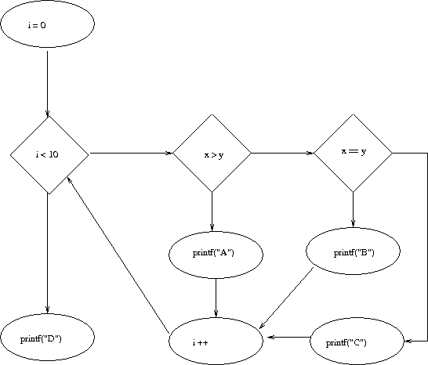

:: LPS - Esercizi sul testing ::
Compito del 2/7/07
int somma (int x, int y) {
if (x > y) return x * y;
else return x + y;
}
Trovare un criterio valido, uno affidabile ed uno ideale.
Un criterio valido è C:{(x,y) t.c. x, y sono INT, x >= y}. Infatti, nel caso in cui x = y, non scopre l'errore. Ma c'è almeno un caso (in realtà tanti) in cui x > y, e quindi scopre l'errore. Da notare che NON È affidabile.
Un criterio affidabile è C:{(x,y) t.c. x, y sono INT, x < y}, perché tutti i risultati che ottiene dalla funzione sono coerenti. Ma NON È valido, perché non scopre l'errore.
Un criterio ideale è C:{(x,y) t.c. x, y sono INT, x = y + 1}, che è valido (trovo almeno una volta l'errore) ed affidabile (trovo sempre l'errore).
Compito del 12/9/07
int diff(int x, int y) {
if (x > y) return x - y;
else return x * y;
}
- Criterio ideale: x < y
- Criterio affidabile: x > y
- Criterio valido: x >= y
Esercizio in classe
Rappresentare con un grafo di flusso il seguente codice:
read (x,y)
a:=x
b:=y
while (a <> b) do
if (a > b) then a := a - b;
else b = b - a;
endif
endwhile
end
Esercizio in classe
Rappresentare con un grafo di flusso il seguente codice:
int main(int x, int y) {
int i;
for (i = 0; i < 10; i ++) {
if (x > y) printf("A");
else if (x == y) printf("B");ù
else printf("C");
}
printf("D");
}

Esercizio in classe
Scrivi in Java un metodo CONFORME che prende come parametro un intero a e un intero b e
- restituisce true se e solo se a è CONFORME a b (cioè a è tra b e 2b oppure 0), e un metodo CALCOLA che prende come parametro in ingresso un array Y di interi positivi e un numero x e restituisce il numero maggiore in Y che sia CONFORME a x, oppure -1 se non ci sono interi conformi a x.
Individua i casi di test necessari per ottenere i tipi di copertura di istruzioni e decisioni del metodo CALCOLA, e esegui i casi di test con EMMA.
Scrivi i casi di test del punto 2 con JUnit.
1.
public class Prova {
static boolean conforme(int a, int b){
if ( (a>=b && a<=2*b) || (a == 0)){
return true;
}
return false;
}
static int calcola(int[] Y, int x){
//Si assume che Y contenga interi positivi
int max = -1;
for (int i=0; i<Y.length; i++){
if (conforme(Y[i],x) && Y[i] > max){
max = Y[i];
}
return max;
}
}
2.
Per il codice di cui al punto 1. (dove il caso “return -1” e il caso “return max con max diverso da
-1” sono accorpati in un’unica istruzione m.) basta un solo caso di test per coprire tutte le
istruzioni di calcola() e conforme(), e cioè un caso di test in cui il vettore Y contiene almeno
due elementi: uno conforme a x per coprire la d. di conforme(), ed uno non conforme a x per
coprire la e. di conforme(). Ad. es. Y= [1,3] e x=2. L’istruzione m. viene sempre coperta (per
come è stato definito il codice); se, invece max venisse inizializzato ad es. a x-1 (come qualcuno
ha fatto!) e al posto di m. avessi
if (max = x-1) return -1;
else return max;
allora occorrerebbe un ulteriore caso per coprire la “return -1”, ad es. prendendo Y vuoto.
Per coprire le decisioni (j. e k. di calcola(), e c. di conforme()), lo stesso caso di test Y= [1,3] e
x=2 è sufficiente. (Ricordate che coprire una decisione significa identificare due casi: uno in cui
è vera, ed uno in cui è falsa)
3.
E’ banale. Nel caso di test Y= [1,3] e x=2 bastava un’istruzione assertEquals(3,calcola(Y,x)).
Torna alla pagina di LPS